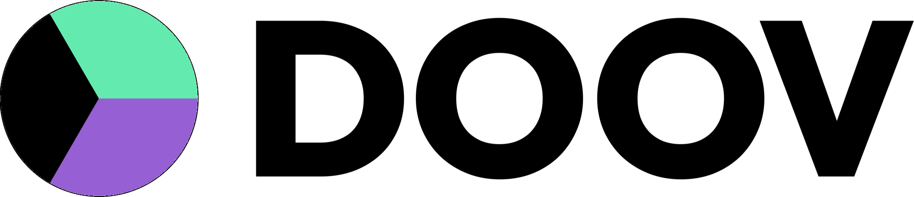
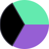

Logo
DOOV 로고의 구성, 컬러, 버전, 사용 규칙을 정의합니다. 로고는 브랜드를 식별하는 핵심 자산이므로 본 기준에 명시된 형태와 색상을 변경 없이 적용합니다.

Anatomy
로고는 원형 심볼(Symbol)과 워드마크(Wordmark)로 구성됩니다. 두 요소의 간격과 크기 비율은 고정값이며 임의로 조정하지 않습니다.
Symbol
- Black — See카메라를 통한 장면 포착
- Mint — UnderstandAI 기반 장면 인식 및 분석
- Violet — Act분석 결과의 인사이트 전달
원을 3분할한 심볼은 카메라 렌즈의 조리개를 형상화하며, 비전 AI의 처리 단계인 포착·분석·전달을 상징합니다.
Wordmark
기하학적 산세리프 기반의 워드마크입니다. 중앙의 두 'O'는 시각, 즉 '보는 행위'를 의미합니다. 워드마크는 제공된 이미지 파일로만 사용하며, 서체로 재조판하지 않습니다.
Color
로고에는 아래 세 가지 브랜드 컬러와 White만 사용합니다.
HEX #63EAAFRGB 99 234 175HEX #965FD4RGB 150 95 212HEX #000000RGB 0 0 0Variants
배경의 명도에 따라 적합한 버전을 선택합니다.
Standard / Black · 밝은 배경

Standard / White · 어두운 배경, 검사 콘솔
Symbol · 파비콘, 앱 아이콘, 협소 영역

Symbol / Dark · 어두운 배경 (Black 영역 외곽선 적용)
어두운 배경에서는 심볼의 Black 영역이 배경과 구분되지 않을 수 있습니다. 심볼 단독 사용 시 외곽선이 적용된 Symbol / Dark를 사용합니다.
Clear Space
로고 주변에는 최소 X 이상의 여백을 확보합니다. X = 워드마크 'O' 높이의 1/2입니다. 해당 영역에는 텍스트, 이미지, 타 로고 등 어떠한 요소도 배치하지 않습니다.
Minimum Size
판독성과 심볼 컬러의 식별성을 확보하기 위해 아래 최소 크기 이상으로 사용합니다.
| 구분 | Digital | |
|---|---|---|
| Standard | 가로 96px 이상 | 가로 25mm 이상 |
| Symbol | 16px 이상 | 5mm 이상 |
Misuse
아래 사례는 브랜드 일관성을 훼손하므로 허용하지 않습니다.
비율 변형 금지
회전 및 기울임 금지
심볼 컬러 및 배열 변경 금지
그림자, 그라데이션 등 효과 적용 금지
대비가 확보되지 않은 복잡한 배경 위 사용 금지
어두운 배경에 Black 버전 사용 금지
Assets
| Variant | File | Format |
|---|---|---|
| Standard / Black | doov_logo_black.png | PNG |
| Standard / White | doov_logo_white.png | PNG |
| Symbol | doov-symbol.svg | SVG |
| Symbol / Dark | doov-symbol-dark.svg | SVG |